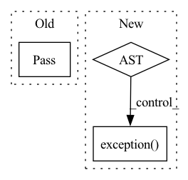

Pattern ID :34805
Before Change
node_info.update({"last_heartbeat_time": now})
as_json = json.dumps(node_info)
self.node_table.put(self.node_id, as_json)
pass
def _parse_resource_list(self):
node_resource_dict = {}
resource_split = self.static_resource_list.split(",")After Change
as_json = json.dumps(node_info)
try:
self.node_table.put(self.node_id, as_json)
except Exception as e:
logger.exception("Failed sending heartbeat: " + str(e))
logger.exception( traceback.format_exc())
def _parse_resource_list(self):
node_resource_dict = {}
resource_split = self.static_resource_list.split(",")In pattern: SUPERPATTERN
Frequency: 3
Non-data size: 3
Instances Fragment ID: 99781410
Project Name: oap-project/cloudtik
Commit Name: 9f2ff5e4f28680a44b18802d1437165cd8064129
Time: 2022-04-15
Author: haifeng.chen@intel.com
File Name: python/cloudtik/core/_private/service/cloudtik_node_controller.py
M Class Name: NodeController
N Class Name: NodeController
M Method Name: send_heart_beat(1)
N Method Name: send_heart_beat(1)
M Parent Class:
N Parent Class:
M File Name: python/cloudtik/core/_private/service/cloudtik_node_controller.py
N File Name: python/cloudtik/core/_private/service/cloudtik_node_controller.py
M Start Line: 104
M End Line: 105
N Start Line: 101
N End Line: 107
Before Change
Action does not have any configuration saved in the current implementation.
pass
async def execute(self, dispatcher: CollectingDispatcher, tracker: Tracker):
Retrieves top intents that were predicted apartAfter Change
try:
action = KaironTwoStageFallbackAction.objects(bot=self.bot, name=self.name, status=True).get().to_mongo().to_dict()
logger.debug("kairon_two_stage_fallback_action_config: " + str(action))
except DoesNotExist as e:
logger.exception( e)
raise ActionFailure("Two stage fallback action config not found")
return action
async def execute(self, dispatcher: CollectingDispatcher, tracker: Tracker): Fragment ID: 99781409
Project Name: digiteinfotech/kairon
Commit Name: 92f604f4aaa1b0a5d2db14ba64fe8a48af0ad71d
Time: 2022-09-22
Author: pandey.udit867@gmail.com
File Name: kairon/actions/definitions/two_stage_fallback.py
M Class Name: ActionTwoStageFallback
N Class Name: ActionTwoStageFallback
M Method Name: retrieve_config(1)
N Method Name: retrieve_config(1)
M Parent Class: ActionsBase
N Parent Class: ActionsBase
M File Name: kairon/actions/definitions/two_stage_fallback.py
N File Name: kairon/actions/definitions/two_stage_fallback.py
M Start Line: 29
M End Line: 29
N Start Line: 33
N End Line: 39
Before Change
example = next(mongo_processor.get_training_examples(intent["name"], self.bot))
suggested_intents.append(example["text"])
except Exception:
pass
dispatcher.utter_message(buttons=suggested_intents)
bot_response = suggested_intents
else:
dispatcher.utter_template(DEFAULT_NLU_FALLBACK_UTTERANCE_NAME, tracker)After Change
example = next(mongo_processor.get_training_examples(intent["name"], self.bot))
text = DataUtility.extract_text_and_entities(example["text"])[0]
suggested_intents.append({"text": text, "payload": text})
except Exception as e:
exception = str(e)
logger.exception( e)
if trigger_rules:
for rule in trigger_rules:
rule["payload"] = f"/{rule["payload"]}"
suggested_intents.append(rule) Fragment ID: 99781407
Project Name: digiteinfotech/kairon
Commit Name: 92f604f4aaa1b0a5d2db14ba64fe8a48af0ad71d
Time: 2022-09-22
Author: pandey.udit867@gmail.com
File Name: kairon/actions/definitions/two_stage_fallback.py
M Class Name: ActionTwoStageFallback
N Class Name: ActionTwoStageFallback
M Method Name: execute(3)
N Method Name: execute(3)
M Parent Class: ActionsBase
N Parent Class: ActionsBase
M File Name: kairon/actions/definitions/two_stage_fallback.py
N File Name: kairon/actions/definitions/two_stage_fallback.py
M Start Line: 42
M End Line: 58
N Start Line: 52
N End Line: 71